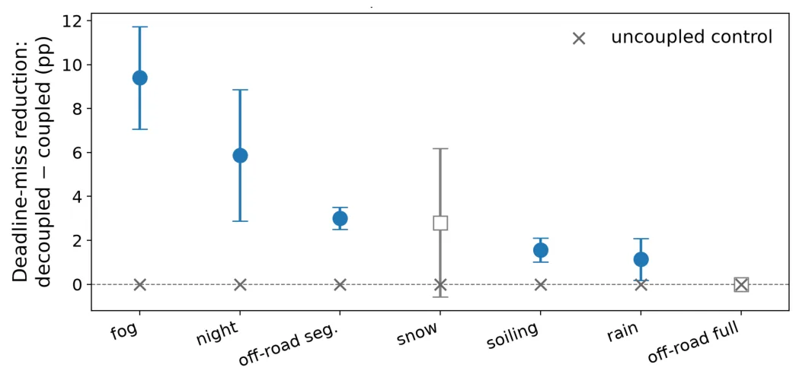
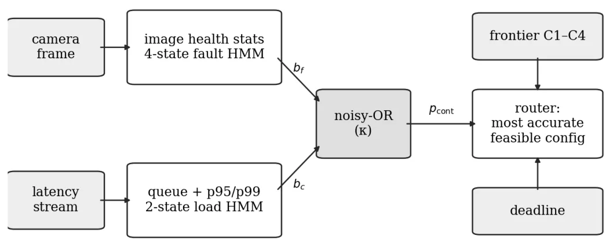
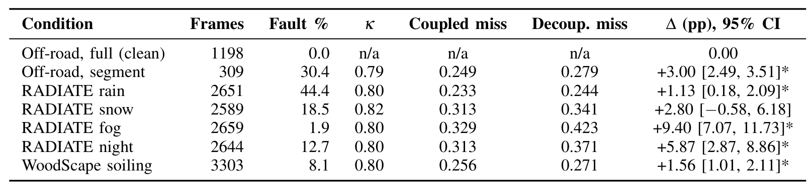
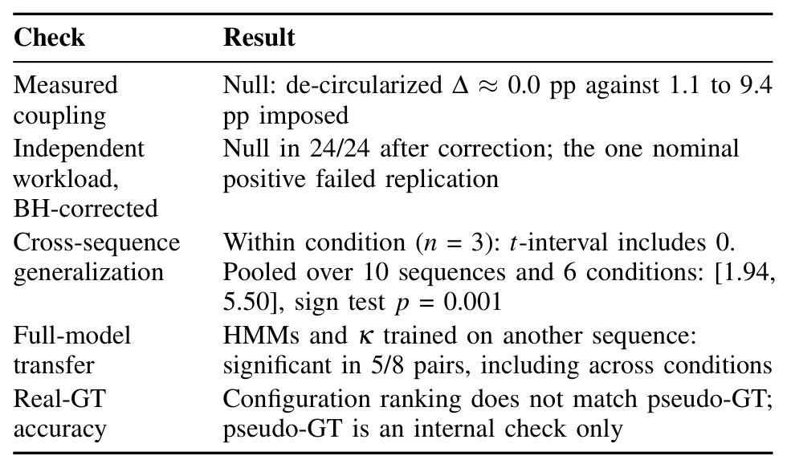

耦合传感器故障与算力竞争下的信念空间感知路由Belief-Space Perception Routing under Coupled Sensor Faults and Compute Contention
关注恶劣天气、传感器故障与实时计算，但实验任务是目标检测路由；对 SLAM 的价值主要在系统调度方法。
一句话工作总结
以信念状态联合调度退化传感器和有限算力，并同时报告现实数据中的负结果；可作为 SLAM 前端动态降级与实时预算管理的机制参考。
摘要
提出一个感知路由器，同时维护传感器故障状态和算力竞争状态的概率估计，并通过 noisy-OR 项建模耦合关系，在四种 YOLO11 分辨率/模型配置间选择以满足逐帧 deadline。在人为构造的共同压力条件下，耦合策略比独立建模策略降低 1.1–9.4 个百分点的 deadline miss rate，路由开销仅数十微秒。作者也诚实报告：真实 RADIATE 序列上的 24 项检验没有发现这种耦合自然存在。
A robot that has to see and react on a fixed clock runs into two problems at once. Its cameras degrade in rain, mud, fog, and darkness. And the single onboard processor it runs on is shared with planning and control, so the compute left over for perception moves around from second to second. Most systems model the two separately. We present a perception router that tracks probabilistic estimates of sensor-fault state and compute- contention state, couples them with a noisy-OR term, and uses the coupled estimate to pick one of four detector configurations (YOLO11x/n at 1280 or 640 px) so that the frame finishes before its deadline. Where the two stressors co-occur, the coupled policy cuts the deadline-miss rate by 1.1 to 9.4 percentage points against a policy that treats them independently. The interval excludes zero in five of six conditions, the pooled effect over 10 sequences and 6 conditions has sign-test p = 0.001, and every uncoupled control and the fault-free trajectory sit at exactly 0.0 pp. Routing costs tens of microseconds per frame. We then asked whether the coupling the method exploits arises on its own. Across eight real RADIATE adverse-weather sequences and three workload proxies independent of the fault signal, after Benjamini-Hochberg correction and a replication run, none of 24 tests found it. We report that null and scope the routing result as a proof of mechanism. Whether such coupling occurs in the field is still open, and the released evaluation pipeline lets a deployment settle it on its own traces.
中文解读摘录
- 原题：Sensor Deployment Optimization for Passive TDOA Localization Under Unknown Drift Distribution
- 作者：Zhenxing Zhang, Tianxian Zhang, Zerui Zhang, Zicheng Wang, Xueting Li
- 推荐评分：8.2/10
- 核心方法：仅使用漂移误差的一二阶统计量构造广义
GDOP_D，分析传感器位置漂移对几何精度分布的重塑，并用 adaptive unidirectional PSO 求解区域最坏情形部署。 - 为何值得看：与 GNSS 站网、UWB/声学 TDOA 的鲁棒几何设计和误差传播直接相关；应进一步核查推导假设、漂移相关性和实测验证。
图表/页面预览
{kind=link}

{kind=link}

{kind=link}

{kind=link}
